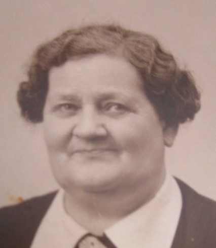

Född 14 dec 1941 i Norrköpings Sankt Johannes (E) 1 .
Död 21 apr 2005 på Knäppingsborgsgatan 57, Gård 15, Kv Prinsen, Östantill, Norrköping, Norrköpings Hedvig (E) 2 .
Född 18 nov 1913 i Norrköpings Matteus (E) 3 .
Död 5 jun 1997 på Trädgårdsgatan 28, Gård 23, Kv Bakugnen, Östantill, Norrköping, Norrköpings Matteus (E) 2 .
Född 23 jun 1901 i Hästhagen, Spolstad, Gårdeby (E) 4 .
Död 1 mar 1979 på Hagebygatan 231, Gård 12, Kv Dörren, Hageby, Norrköping, Norrköpings Sankt Johannes (E) 2 .

MM Selma Maria Johansson f Karlsson.Född 4 jun 1882 i Nystugan, Kalerum, Gryt (E) 5 .
Död 28 feb 1966 på De Geersgatan 59, Gård 1, Kv Tuvan, Enebymo, Norrköping, Norrköpings Östra Eneby (E) 2 .
MMF Karl Peter Karlsson.

Född 27 feb 1837 i Käggla/Kägglö, Tryserum (E) 6 .
Död 23 feb 1904 i Hästhagen, Spolstad, Gårdeby (E) 7 .
MMM Anna Sofia Svensdotter.
Född 21 apr 1848 i Björklund, Rullerum, Ringarum (E) 8 .
Död 8 jul 1932 i Hagsätter, Halleby, Skärkind (E) 9 .